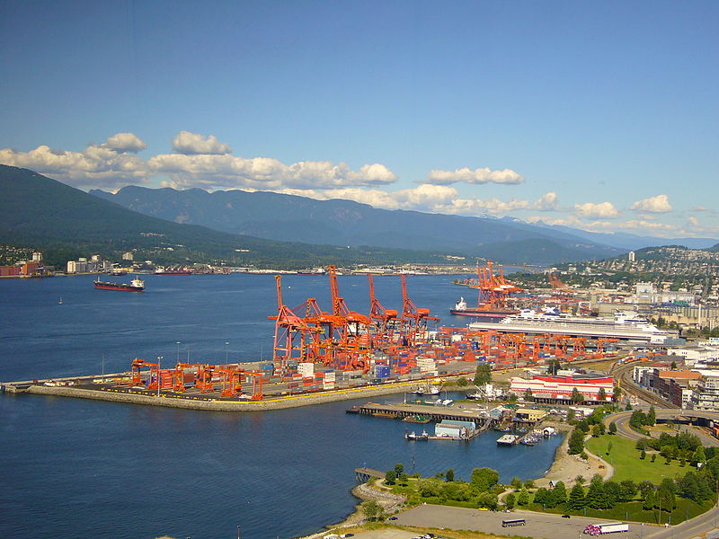

File:Dock Vancouver.JPG

{kind=link}
Size of this preview: 800 × 600 pixels. Other resolutions: 320 × 240 pixels | 640 × 480 pixels | 1,024 × 768 pixels | 1,280 × 960 pixels | 2,816 × 2,112 pixels.
{kind=link}
{kind=link}
{kind=link}
{kind=link}
{kind=link}
Original file (2,816 × 2,112 pixels, file size: 1.37 MB, MIME type: image/jpeg)
Summary[edit]
{kind=link}
Photo d'une zone portuaire de Vancouver prise en 2006 de la Lookout Tower.
| Description |
Photo d'une zone portuaire de Vancouver prise en 2006 de la Lookout Tower |
| Date | |
| Source | photo personnelle prise en juillet 2006 |
| Author | photo personnelle |
| Permission (Reusing this file) |
droit de reproduction libre |
Licensing[edit]
{kind=link}
| I, the copyright holder of this work, release this work into the public domain. This applies worldwide. In some countries this may not be legally possible; if so: I grant anyone the right to use this work for any purpose, without any conditions, unless such conditions are required by law.
|
File history
Click on a date/time to view the file as it appeared at that time.
| Date/Time | Thumbnail | Dimensions | User | Comment | |
|---|---|---|---|---|---|
| current | 22:25, 24 March 2007 | 2,816 × 2,112 (1.37 MB) | 01.camille (talk | contribs) | Photo d'une zone portuaire de Vancouver prise en 2006 de la Lookout Tower. |
- You cannot overwrite this file.
File usage on Commons
The following page links to this file:
File usage on other wikis
The following other wikis use this file:
- Usage on fr.wikipedia.org
- Usage on ru.wikipedia.org
- Usage on sk.wikipedia.org
{kind=link}
{kind=link}
{kind=link}
{kind=link}
{kind=link}
{kind=link}
{kind=link}
{kind=link}
{kind=link}
{kind=link}